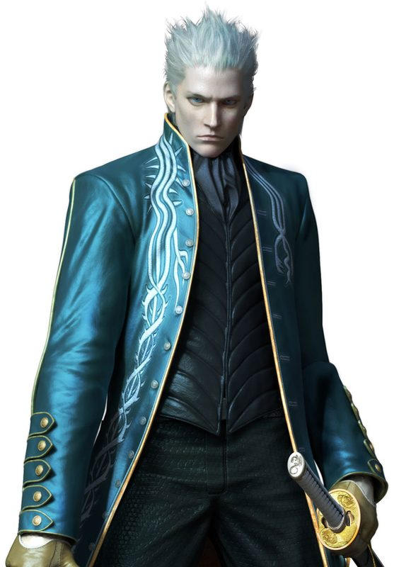

Judgement Cut
Core Engine, Concentration. Begin at 0 Concentration (max 10). Gain 1 when you hit with Yamato without taking damage since your last turn; when you perfectly evade (an attack misses you or you succeed on a Dexterity save against an effect) or parry; or when you spend a full turn moving no more than half speed while taking no action or bonus action. Each condition grants 1 Concentration; multiple conditions can pay out in the same turn. Lose 1 when hit; lose all if Frightened or Incapacitated. Engine reactions: "Not this time!" parry (d20 + DEX + PB vs the attack roll) and Mind Like Water (spend 1 Concentration for advantage on a Dex save). Thresholds: 5+ Concentration grants Still Mind (advantage vs Frightened); 10 Concentration grants Perfect Composure (the first loss each round is negated).

Judgement Cut
Yamato / Concentration / Doppelganger / Devil Trigger
What the technique actually does.
Core Engine, Concentration. The engine in full: Concentration from 0 to 10, gained by hitting cleanly with Yamato, by perfect evasion or a parry, or by a full turn of slow deliberate movement — each discipline paying out independently; lost 1 per hit, all of it to fear or incapacitation. The composed mind defends itself: a parry that turns blades aside and feeds his focus, still water that steadies his hand, stillness against fear, and at the peak, a composure that refuses the first wound to the mind each round. Guard the mind, and the blade follows. Begin at 0 Concentration (max 10). Gain 1 when you hit with Yamato without taking damage since your last turn; when you perfectly evade (an attack misses you or you succeed on a Dexterity save against an effect) or parry; or when you spend a full turn moving no more than half speed while taking no action or bonus action. Each condition grants 1 Concentration; multiple conditions can pay out in the same turn. Lose 1 when hit; lose all if Frightened or Incapacitated. "Not this time!" (reaction): when hit by a melee attack, roll d20 + DEX + PB against the attack roll — beat it by 5+: no damage and +1 Concentration; meet or beat it: half damage; fail by 1–4: reduce the damage by DEX + PB; fail by 5+: full damage. Mind Like Water (reaction): when you make a Dexterity saving throw, spend 1 Concentration for advantage on the save. At 5+ Concentration — Still Mind: advantage on saving throws against Frightened. At 10 Concentration — Perfect Composure: the first time you would lose Concentration each round, you don't.
Field notes. Subject: a cursed blade that answers only to an unbroken mind. Three truths govern him. First, Concentration is the technique’s true body, it begins at 0 (max 10), rises when he strikes cleanly with Yamato, when he perfectly evades or parries, or when he spends a full turn moving slowly and striking nothing — each discipline paying out on its own; it falls by 1 when he is hit, and vanishes entirely if he is Frightened or Incapacitated. Second, the composed mind defends itself: his parry turns the blade aside and feeds his focus, still water steadies his hand on the Dexterity save, stillness at 5 Concentration holds fear at bay, and at 10 the first wound to his composure each round simply does not land. Third, the Yamato’s spatial slashes are not swung, they are decided: ranged cuts, teleports, and mirage blades all scale at 5 and 10 Concentration — and being hit costs him less than it once did, though fear still takes everything. Hence the maxim: the blade goes quiet the instant the hand holding it shakes.
Level 1 through 20.
1Yamato · Judgement Mark · Focused Draw
Passive · Manifest Yamato: cursed katana, 1d8 slashing, versatile (1d10), finesse; counts as a class weapon · Once/turn: on a hit, spend 1 CE for +1d8 force with a 10-ft spatial extension · Judgement Mark: when you hit a creature with Yamato, you may mark it (max PB marks); you sense the direction and distance of marked creatures within 1 mile · Focused Draw: when you hit with Yamato, spend 1 Concentration for +1d8 force damage.
The instrument: Yamato manifests as a cursed katana in his hands. The sword does not reach. The decision to cut does. And focus itself becomes an edge.
3Trick
Bonus action · 1 CE · Teleport 20 ft to a visible space (30 ft at 5+ Concentration), or to a marked target at 30 ft (40 ft at 5+ Concentration).
He does not cross the distance. He declines it.
6Judgement Cut
Action · 3 CE · Target a point within 60 ft: creatures in a 10-ft sphere Dex save, 4d10 force/slashing (+1d10 force vs marked targets) · At 10 Concentration: may replace one Attack once/turn.
The namesake. The cut arrives where he points. The blade is a formality.
9Mirage Blades
Bonus action · 2 CE · Create PB blades (spend before next long rest): +1d8 force on attacks, pin movement 10 ft, or make a 60-ft ranged technique attack.
The sword, multiplied by intention.
11Doppelganger
Action · 4 CE · Focus, 1 minute · Spectral double repeats one weapon attack or Judgement Cut at the end of each of your turns for half dice, no extra riders. The repeat costs the normal CE (3 CE for Judgement Cut); weapon attack repeats are free.
Even his shadow has learned the form.
13Devil Trigger
Action · 5 CE · 1 minute · 40-ft fly, +10 speed, resistance to bludgeoning/piercing/slashing and necrotic, heal PB HP at the start of your turn, Yamato +1d8.
The devil in him, scheduled.
15Judgement Cut End
Action · 8 CE · Requires 10 Concentration · 40-ft radius: Dex save, 10d10 force/slashing, half on success · Concentration becomes 5.
He spends much of the unbroken mind at once — but not all of it. The cut that ends the argument, and the argument’s author.
18Sin Devil Trigger
Action · 8 CE · 1 minute, once/long rest · 80-ft fly, resistance to all but psychic/radiant, Yamato +2d8, Trick free once/turn, regain 1 Concentration at the start of your turn.
Sin, administered at altitude.
20Motivated
Passive · Concentration maximum 12; the first time you are hit each round, you do not lose Concentration · At 10+: the first Judgement Cut each round costs 0 CE · Once/long rest: enter Sin Devil Trigger at 10 Concentration for 0 CE.
Motivation, in the end, is a resource that finally learned to sustain itself.
Maximum, Domain, or equivalent.
The Maximum is the cut aimed at distance itself: 10 CE, action, a 180-ft line, Dex save, 12d10 force or slashing; barriers take maximum dice and make a stability check. Note the honest boundary, printed in the margin: it cuts space, not concepts, souls, or game rules. Even the Yamato has a jurisdiction. Maximum, Dimensional Judgement (10 CE; action): 180-ft line, Dex save, 12d10 force/slashing; barriers take maximum dice and make a stability check (see Rules, Shared Resolutions). It cuts space, not concepts, souls, or game rules.
Build-defining options.
Perfect Sheathe
When he reduces a hostile to 0 HP, 2 Concentration as a reaction: sheathe Yamato in one perfect motion, each hostile within 10 ft that witnessed it saves or is Frightened of him until the end of his next turn. The kill is the technique. The sheathe is the signature.
Rapid Slash
After using Trick, his first Yamato attack this turn may cleave into a second creature within 10 ft of the first, damage dice split evenly, one attack roll against each. Teleportation, with a follow-through.
Summoned Sword Master
2 unspent Mirage Blades as a bonus action weave a spinning guard: until his next turn, ranged attacks against him have disadvantage and he gains +2 AC against them. The swords that attack learn, on command, to defend.
Dark Slayer
While at 10 Concentration, when targeted by an attack: reaction, 1 CE, Trick up to 30 ft before it resolves, the attack misses if it can no longer reach him; and if he reappears within 10 ft of the attacker, one Yamato attack as part of the same motion. The perfect defense is to have been somewhere else, rudely.
Rift Doorway
The Yamato does not only cut what is there. It cuts what is between. He draws the blade across empty air and leaves the cut open: a doorway that was never built, hanging where the slash ended. Bonus action, 2 CE: cut a 5-ft doorway at a point within 60 ft that you can see, linked to your space. The doorway lasts 1 minute; any creature that steps through exits the other side for 5 ft of movement. You can maintain only one doorway at a time.